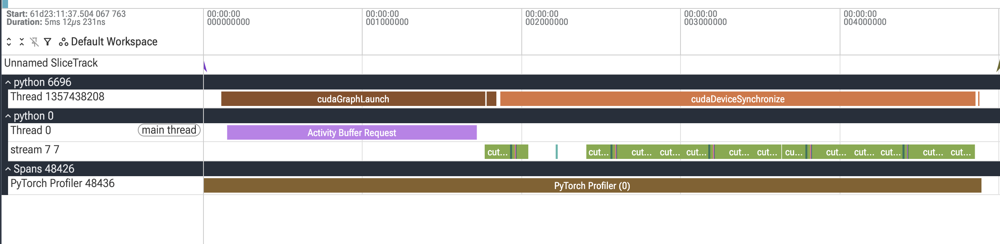
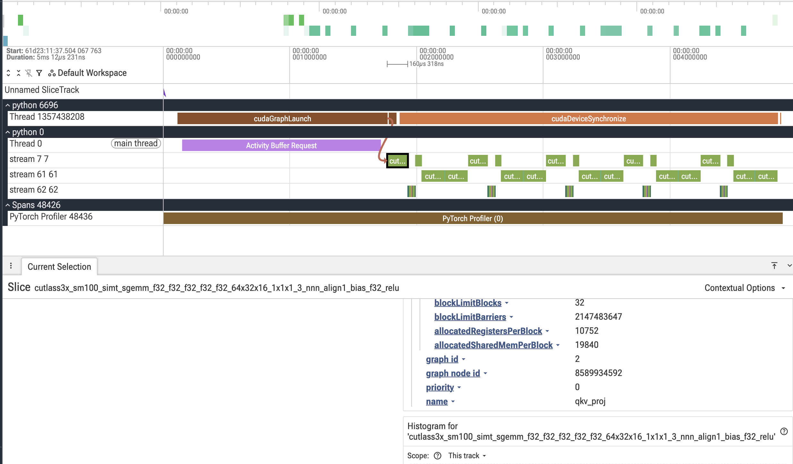
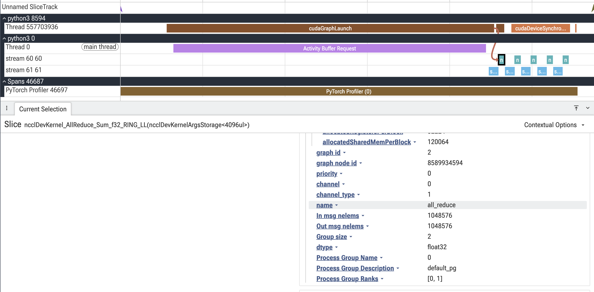

Note
Go to the end to download the full example code.
CUDA Graph Kernel Annotations and Profiling#
Author: Shangdi Yu
How to capture CUDA graphs with kernel annotations
How to profile annotated graphs
How to post-process traces with semantic kernel lanes
How to visualize graph execution with custom stream assignments
How to annotate communication collectives with the metadata (collective type, message size, group, rank) that eager NCCL traces expose but CUDA graphs drop
PyTorch 2.12+
CUDA-capable GPU
Driver/CUDA-compat >= 13.1 for annotation support
cuda-bindings >= 13.1.0
perfetto (
pip install perfetto)
CUDA graphs are a powerful optimization technique that can significantly reduce kernel launch overhead by capturing and replaying sequences of CUDA operations. However, when profiling CUDA graphs, all kernels appear on the same stream, making it difficult to understand the logical structure of your computation.
This tutorial demonstrates how to use kernel annotations to add semantic labels to kernels within CUDA graphs. These annotations can be merged back into profiler traces to create custom visualization lanes, making it easier to understand and debug complex graph executions.
Annotations are not limited to compute kernels. One of the most valuable uses is annotating communication collectives. In eager mode, the profiler attaches rich metadata to every NCCL kernel – the collective type, message size, process group, and ranks – so you can see exactly what each comm is doing. Under CUDA graphs that metadata is lost: the collective replays as an opaque kernel. This tutorial shows how to re-attach that metadata with annotations so graphed comms read just like eager ones.
Overview#
CUDA graph kernel annotations allow you to add semantic labels to kernels during graph capture. These labels help you understand what each kernel does when profiling, making it easy to identify which parts of your model (e.g., attention, MLP, normalization) are executing at any given time.
Without annotations, profiler traces show all kernels on a single stream with auto-generated names, making it difficult to understand the logical structure of your computation. With annotations, you can:
Label kernel groups with meaningful names during capture
Assign custom stream IDs for visual organization
Merge labels into profiler traces for semantic visualization
The result is a profiler trace where kernels are labeled and organized by their function, making it much easier to identify performance bottlenecks and understand execution flow.
Before annotations: All kernels appear on a single stream with auto-generated names, making it difficult to understand which operations belong to which logical component of your model.
{kind=link}

After annotations: Kernels are organized into semantic lanes (streams 61 and 62) with meaningful labels like “attention” and “mlp”, making it easy to identify different components and understand the execution structure.
{kind=link}

As another example, here is an AllReduce kernel with annotated metadata:
{kind=link}

Requirements#
For this tutorial, you’ll need:
PyTorch 2.12+
A CUDA GPU
Driver/CUDA-compat >= 13.1 for annotation support
The
cuda-bindingspackage >= 13.1.0 (pip install cuda-python)The
perfettopackage for writing the trace (pip install perfetto)
The cuda-bindings package provides the Python bindings for CUDA runtime APIs.
Version 13.1.0+ is required for the cudaGraphNodeGetToolsId API that
enables kernel annotations. If you have an older version, the tutorial will
run but annotations will be disabled with a warning message explaining how
to upgrade.
On older drivers or cuda-bindings versions, the capture and profiling will
still work, but mark_kernels will be a no-op and no semantic lanes will
appear in the final trace.
import copy
import hashlib
import json
import math
import os
import pickle
import sys
from collections import Counter, defaultdict
from pathlib import Path
import torch
import torch.distributed as dist
import torch.multiprocessing
from torch.profiler import profile, ProfilerActivity
from torch.cuda._graph_annotations import (
get_kernel_annotations,
get_stream_for_pg,
mark_kernels,
_is_tools_id_unavailable,
)
from torch.cuda._annotate_cuda_graph_trace import (
annotate_trace,
load_trace,
)
Building a Model#
Let’s create a simple transformer block as our example model. We’ll annotate different parts of the computation (QKV projection, attention, output projection, MLP) to see them as separate lanes in the profiler.
def build_transformer_block():
"""Create a simple transformer block with parameters."""
device = "cuda"
torch.manual_seed(0)
# Model dimensions
batch_size, seq_len, dim, num_heads = 4, 256, 1024, 8
head_dim = dim // num_heads
# Initialize parameters
params = {
"x": torch.randn(batch_size, seq_len, dim, device=device),
"Wqkv": torch.randn(dim, 3 * dim, device=device) / math.sqrt(dim),
"Wo": torch.randn(dim, dim, device=device) / math.sqrt(dim),
"W1": torch.randn(dim, 4 * dim, device=device) / math.sqrt(dim),
"W2": torch.randn(4 * dim, dim, device=device) / math.sqrt(4 * dim),
}
def forward():
"""Forward pass with annotated regions."""
B, T, D, H = batch_size, seq_len, dim, num_heads
hd = head_dim
# Annotate QKV projection
with mark_kernels({"name": "qkv_proj"}):
qkv = params["x"] @ params["Wqkv"]
# Reshape for multi-head attention
q, k, v = qkv.split(D, dim=-1)
q = q.view(B, T, H, hd).transpose(1, 2)
k = k.view(B, T, H, hd).transpose(1, 2)
v = v.view(B, T, H, hd).transpose(1, 2)
# Annotate attention computation (optionally on a custom stream)
with mark_kernels({"name": "attention", "stream": 62}):
scores = (q @ k.transpose(-1, -2)) / math.sqrt(hd)
attn = torch.softmax(scores, dim=-1)
ctx = (attn @ v).transpose(1, 2).reshape(B, T, D)
# Annotate output projection
with mark_kernels({"name": "out_proj"}):
o = ctx @ params["Wo"]
# Annotate MLP (on another custom stream)
with mark_kernels({"name": "mlp", "stream": 61}):
return torch.nn.functional.gelu(o @ params["W1"]) @ params["W2"]
return forward
The mark_kernels Context Manager#
The key API is mark_kernels(), which takes a dictionary with:
name: A string label for this kernel group (becomes the lane name)stream(optional): A virtual stream ID for visualization
Any CUDA kernels launched within the context will be tagged with these annotations. Later, when we post-process the profiler trace, these tags will be used to organize kernels into custom lanes.
Capturing a CUDA Graph with Annotations#
To capture a graph with annotations enabled, we pass
enable_annotations=True to torch.cuda.graph(). This automatically
handles the annotation lifecycle: enabling, resolving, and remapping.
def capture_graph_with_annotations(model_fn):
"""Capture the model into a CUDA graph with annotations enabled."""
# Warm up on a side stream before capture
warmup_stream = torch.cuda.Stream()
warmup_stream.wait_stream(torch.cuda.current_stream())
with torch.cuda.stream(warmup_stream):
for _ in range(3):
model_fn()
torch.cuda.current_stream().wait_stream(warmup_stream)
# Capture with annotations enabled
graph = torch.cuda.CUDAGraph()
with torch.cuda.graph(graph, enable_annotations=True):
output = model_fn()
num_annotations = len(get_kernel_annotations())
print(f"Captured graph with {num_annotations} annotated nodes")
return graph, output
Profiling the Graph#
After capturing the graph, we replay it a few times to warm up, then profile subsequent replays. The profiler will record kernel execution times, which we’ll later merge with our annotations.
def profile_graph(graph, output_dir):
"""Profile graph replays and save the trace."""
output_dir = Path(output_dir)
output_dir.mkdir(exist_ok=True, parents=True)
# Warm up replays
for _ in range(3):
graph.replay()
torch.cuda.synchronize()
# Profile several replays
with profile(activities=[ProfilerActivity.CPU, ProfilerActivity.CUDA]) as prof:
for _ in range(5):
graph.replay()
torch.cuda.synchronize()
# Export the raw trace
trace_path = output_dir / "trace_raw.json.gz"
prof.export_chrome_trace(str(trace_path))
print(f"Saved raw trace to {trace_path}")
return trace_path
Saving Annotation Metadata#
We need to save the annotation metadata in a pickle file that the
post-processing tool can discover. The file should be named
kernel_annotations_rank0_fwd_bwd.pkl and placed where the trace tool
can find it.
def save_annotations(output_dir):
"""Save kernel annotations to a pickle file."""
output_dir = Path(output_dir)
output_dir.mkdir(exist_ok=True, parents=True)
annotations_path = output_dir / "kernel_annotations_rank0_fwd_bwd.pkl"
annotations = dict(get_kernel_annotations())
with open(annotations_path, "wb") as f:
pickle.dump(annotations, f)
print(f"Saved {len(annotations)} annotations to {annotations_path}")
return annotations_path
Post-Processing: Merging Annotations into Traces#
The final step is to merge the annotations back into the trace. This involves:
Loading the raw trace and annotations
Calling
annotate_trace()to apply the annotationsEmitting a native Perfetto
.pftracethat preserves overlapping kernels on their real stream
The result is a trace where kernels are organized by your semantic labels.
Why a Perfetto protobuf trace (not Chrome JSON)? A Chrome JSON trace –
the format torch.profiler.export_chrome_trace produces – has a
fundamental limitation: a single track (a (pid, tid) row) can only show
properly nested slices, never crossing/overlapping ones.
Perfetto’s native protobuf trace (.pftrace) solves this
via the TrackDescriptor field sibling_merge_key. We split
overlapping slices across hidden backing tracks (so each protobuf
begin/end stack stays validly nested), then give those backing tracks the
same sibling_merge_key so the Perfetto UI merges them back into a
single logical row. Nothing is relocated to a fake stream and no timestamp is
clamped – the overlap is shown faithfully on the kernel’s real stream.
This converter is adapted from Driss Guessous’s transformer_nuggets
(transformer_nuggets/utils/track_event.py); we inline a compact,
self-contained version here. It needs the perfetto package
(pip install perfetto).
def _stable_uuid(*parts):
"""A stable 60-bit track UUID derived from its identifying parts."""
digest = hashlib.sha1(":".join(str(p) for p in parts).encode()).hexdigest()
return int(digest[:15], 16)
def _assign_nesting_lanes(slices):
"""Split overlapping slices into backing lanes so each lane is nestable.
A lane only holds slices that are either disjoint or fully contained, so a
begin/end stack on that lane never has crossing slices. Returns
``(lane_of_index, lane_count)``. The lane is a *backing* track index, not a
user-visible stream -- lanes sharing a stream are merged back in the UI.
"""
order = sorted(
range(len(slices)),
key=lambda i: (slices[i]["ts"], -slices[i]["end"], slices[i]["index"]),
)
lane_of = {}
lane_end_stacks = []
for i in order:
s = slices[i]
assigned = None
for lane, stack in enumerate(lane_end_stacks):
while stack and stack[-1] <= s["ts"]:
stack.pop()
# Valid if the lane is free or this slice nests inside the open one.
if not stack or s["end"] <= stack[-1]:
stack.append(s["end"])
assigned = lane
break
if assigned is None:
lane_end_stacks.append([s["end"]])
assigned = len(lane_end_stacks) - 1
lane_of[i] = assigned
return lane_of, len(lane_end_stacks)
def _add_debug_annotation(track_event, name, value):
"""Carry a Chrome event arg over as a typed Perfetto debug annotation."""
ann = track_event.debug_annotations.add()
ann.name = str(name)
# bool must be checked before int (bool is a subclass of int in Python).
if isinstance(value, bool):
ann.bool_value = value
elif isinstance(value, int):
ann.int_value = value
elif isinstance(value, float):
ann.double_value = value
elif value is None:
ann.string_value = "null"
elif isinstance(value, str):
ann.string_value = value
else:
ann.legacy_json_value = json.dumps(value, default=str)
def write_perfetto_trace(trace, output_path):
"""Convert a Chrome JSON trace dict to a native Perfetto ``.pftrace``.
Each Chrome ``(pid, tid)`` row becomes a ``TrackDescriptor``; each ``ph='X'``
slice becomes a ``TYPE_SLICE_BEGIN`` / ``TYPE_SLICE_END`` pair. Overlapping
slices are split across backing lanes that share a ``sibling_merge_key`` so
the UI re-merges them onto their real stream.
"""
from perfetto.trace_builder.proto_builder import TraceProtoBuilder
from perfetto.protos.perfetto.trace.perfetto_trace_pb2 import (
TrackDescriptor,
TrackEvent,
)
events = trace["traceEvents"]
# Collect the process/thread names emitted as metadata ('M') events.
process_names, thread_names = {}, {}
for e in events:
if e.get("ph") == "M":
if e.get("name") == "process_name":
process_names[e.get("pid")] = e.get("args", {}).get("name", "")
elif e.get("name") == "thread_name":
key = (e.get("pid"), e.get("tid"))
thread_names[key] = e.get("args", {}).get("name", "")
# Group complete ('X') slices by their (pid, tid) track.
slices_by_track = defaultdict(list)
for i, e in enumerate(events):
if e.get("ph") == "X":
ts = float(e.get("ts", 0) or 0)
dur = float(e.get("dur", 0) or 0)
slices_by_track[(e.get("pid"), e.get("tid"))].append(
{"event": e, "index": i, "ts": ts, "end": ts + dur}
)
def ts_us_to_ns(value):
return int(round(value * 1000.0))
builder = TraceProtoBuilder()
SEQ = 1
# One descriptor per process.
for pid in {pid for (pid, _tid) in slices_by_track}:
pkt = builder.add_packet()
desc = pkt.track_descriptor
desc.uuid = _stable_uuid("process", pid)
desc.name = process_names.get(pid, f"process {pid}")
# One descriptor per backing lane; emit begin/end markers per slice.
markers = []
for (pid, tid), slices in slices_by_track.items():
lane_of, lane_count = _assign_nesting_lanes(slices)
name = thread_names.get((pid, tid), f"stream {tid}")
lane_uuids = []
for lane in range(lane_count):
uuid = _stable_uuid("track", pid, tid, lane)
lane_uuids.append(uuid)
pkt = builder.add_packet()
desc = pkt.track_descriptor
desc.uuid = uuid
desc.parent_uuid = _stable_uuid("process", pid)
desc.name = name
# Multiple lanes for one stream -> merge them into one UI row.
if lane_count > 1:
desc.sibling_merge_behavior = (
TrackDescriptor.SIBLING_MERGE_BEHAVIOR_BY_SIBLING_MERGE_KEY
)
desc.sibling_merge_key = f"{pid}:{tid}:{name}"
for i, s in enumerate(slices):
uuid = lane_uuids[lane_of[i]]
markers.append((ts_us_to_ns(s["ts"]), 1, uuid, "begin", s["event"]))
markers.append((ts_us_to_ns(s["end"]), 0, uuid, "end", s["event"]))
# Begin markers must be ordered before end markers at the same timestamp.
markers.sort(key=lambda m: (m[0], m[1]))
for ts_ns, _rank, uuid, kind, event in markers:
pkt = builder.add_packet()
pkt.timestamp = ts_ns
pkt.trusted_packet_sequence_id = SEQ
track_event = pkt.track_event
track_event.track_uuid = uuid
if kind == "begin":
track_event.type = TrackEvent.TYPE_SLICE_BEGIN
track_event.name = event.get("name", "slice")
if event.get("cat"):
track_event.categories.append(event["cat"])
for key, value in (event.get("args") or {}).items():
_add_debug_annotation(track_event, key, value)
else:
track_event.type = TrackEvent.TYPE_SLICE_END
Path(output_path).write_bytes(builder.serialize())
return output_path
def post_process_trace(raw_trace_path, annotations_path, output_dir):
"""Merge annotations into the trace and emit a Perfetto ``.pftrace``."""
output_dir = Path(output_dir)
# Load raw trace and annotations
raw_trace = load_trace(raw_trace_path)
with open(annotations_path, "rb") as f:
annotations = pickle.load(f)
# Make a copy for post-processing
annotated_trace = copy.deepcopy(raw_trace)
# Apply annotations
num_annotated = annotate_trace(annotated_trace, annotations)
print(f"Annotated {num_annotated} kernels in the trace")
# Emit a native Perfetto protobuf trace. Overlapping kernels are split onto
# backing lanes that re-merge in the UI -- no kernel is relocated to a fake
# stream and no timestamp is mutated.
annotated_path = output_dir / "trace_annotated.pftrace"
write_perfetto_trace(annotated_trace, annotated_path)
print(f"Saved annotated trace to {annotated_path}")
return annotated_path, raw_trace, annotated_trace
Comparing Before and After#
To see the impact of annotations, let’s count how kernels are distributed across thread IDs (which represent visualization lanes in the trace).
def compare_traces(raw_trace, annotated_trace):
"""Compare kernel distribution before and after annotation."""
def count_lanes(trace):
"""Count kernels per lane (tid)."""
counter = Counter(
event["tid"]
for event in trace["traceEvents"]
if event.get("cat") == "kernel"
)
return dict(sorted(counter.items()))
raw_lanes = count_lanes(raw_trace)
annotated_lanes = count_lanes(annotated_trace)
print("\n" + "="*60)
print("BEFORE annotation - kernels per lane (tid -> count):")
for tid, count in raw_lanes.items():
print(f" Stream {tid}: {count} kernels")
print("\nAFTER annotation - kernels per lane (tid -> count):")
for tid, count in annotated_lanes.items():
print(f" Stream {tid}: {count} kernels")
print("="*60)
Putting It All Together#
Now let’s run the complete workflow: build a model, capture it with annotations, profile it, and post-process the trace.
def main():
"""End-to-end CUDA graph annotation and profiling demo."""
if not torch.cuda.is_available():
raise SystemExit("CUDA required for this tutorial")
# Check if annotation support is available
# PyTorch will log a warning if cuda-bindings version is too old
supported = not _is_tools_id_unavailable()
print(f"Annotation support available: {supported}")
if not supported:
print("NOTE: Annotation API not available.")
print("This could be due to:")
print(" - Driver/CUDA-compat < 13.1")
print(" - Outdated cuda-bindings (check PyTorch warnings above)")
print("Annotations will not be recorded, but the demo will still run.")
print("Kernels will be reassigned to the default lane, not semantic lanes.\n")
output_dir = Path("traces")
# Build the model
print("\n1. Building transformer block model...")
model_fn = build_transformer_block()
# Capture graph with annotations
print("\n2. Capturing CUDA graph with annotations...")
graph, output = capture_graph_with_annotations(model_fn)
# Save annotations
print("\n3. Saving annotation metadata...")
annotations_path = save_annotations(output_dir)
# Profile the graph
print("\n4. Profiling graph replays...")
raw_trace_path = profile_graph(graph, output_dir)
# Post-process the trace
print("\n5. Post-processing: merging annotations into trace...")
annotated_path, raw_trace, annotated_trace = post_process_trace(
raw_trace_path, annotations_path, output_dir
)
# Compare before and after
print("\n6. Comparing traces...")
compare_traces(raw_trace, annotated_trace)
# Summary
print("\n" + "="*60)
print("SUMMARY")
print("="*60)
print(f"Raw trace: {raw_trace_path}")
print(f"Annotated trace: {annotated_path}")
print(f"Annotations: {annotations_path}")
print("\nOpen the annotated trace in https://ui.perfetto.dev/ to visualize")
print("the semantic kernel lanes.")
print("="*60)
# Example output:
# if __name__ == "__main__":
# main()
#
# Annotation support available: True
#
# 1. Building transformer block model...
#
# 2. Capturing CUDA graph with annotations...
# Captured graph with 13 annotated nodes
#
# 3. Saving annotation metadata...
# Saved 13 annotations to traces/kernel_annotations_rank0_fwd_bwd.pkl
#
# 4. Profiling graph replays...
# Saved raw trace to traces/trace_raw.json.gz
#
# 5. Post-processing: merging annotations into trace...
# Annotated 65 kernels in the trace
# Saved annotated trace to traces/trace_annotated.pftrace
#
# 6. Comparing traces...
#
# ============================================================
# BEFORE annotation - kernels per lane (tid -> count):
# Stream 7: 65 kernels
#
# AFTER annotation - kernels per lane (tid -> count):
# Stream 7: 10 kernels
# Stream 61: 15 kernels
# Stream 62: 40 kernels
# ============================================================
#
# ============================================================
# SUMMARY
# ============================================================
# Raw trace: traces/trace_raw.json.gz
# Annotated trace: traces/trace_annotated.pftrace
# Annotations: traces/kernel_annotations_rank0_fwd_bwd.pkl
#
# Open the annotated trace in https://ui.perfetto.dev/ to visualize
# the semantic kernel lanes.
# ============================================================
Annotating Communication Collectives#
In eager mode the profiler automatically intercepts NCCL collectives and records rich metadata: collective type, input/output message sizes, the process group, its size, and the participating ranks.
Under CUDA graphs that automatic interception stops working. The collective is
captured once and then replayed as an opaque kernel node. The profiler cannot
intercept graph replay, so it has nothing to attach the NCCL metadata to. The
kernels still show up in the trace (e.g., ncclDevKernel_AllReduce_Sum_f32_RING_LL),
but they are opaque: you cannot tell what collective type it is, how many bytes
moved, or which process group it belongs to.
Annotations close this gap. By wrapping the collective in mark_kernels
with the same fields the profiler auto-attaches in eager mode, we manually
re-attach that metadata to the graphed kernel. After post-processing, a
graphed collective reads just like an eager one. The helper below builds the
metadata dict; using the field names the profiler uses in eager
(In msg nelems, Group size, Process Group Name, …) keeps the
annotated trace consistent with non-graphed traces.
def annotate_collective(collective_name, input_tensor, output_tensor, group=None):
"""Annotate a collective with the metadata eager NCCL traces expose.
Returns a ``mark_kernels`` context manager. Any kernels launched inside
(i.e. the collective) are tagged with the collective type, message sizes,
dtype, and the process group's name/description/ranks, and placed on a
dedicated lane keyed by the process group so comms are visually separated
from compute.
The field names match the keys the profiler records for eager collectives
(``In msg nelems``, ``Group size``, ``Process Group Name``, ...), so an
annotated graphed collective reads exactly like a non-graphed one.
"""
pg = group if group is not None else (dist.group.WORLD if dist.is_initialized() else None)
ranks = dist.get_process_group_ranks(pg) if pg is not None else [0]
group_name = getattr(pg, "group_name", "default")
group_desc = getattr(pg, "group_desc", "default")
# NCCL always uses its own internal stream, so key the lane on the process
# group (name + description) and give it a stable id (>= 60).
pg_key = f"{group_name}_{group_desc}"
annotation = {
"name": collective_name,
"In msg nelems": input_tensor.numel(),
"Out msg nelems": output_tensor.numel(),
"Group size": len(ranks),
"dtype": str(input_tensor.dtype).replace("torch.", ""),
"Process Group Name": group_name,
"Process Group Description": group_desc,
"Process Group Ranks": ranks,
"stream": get_stream_for_pg(pg_key),
}
return mark_kernels(annotation)
A Block That Mixes Compute and Communication#
A tensor- or data-parallel layer interleaves matmuls with collectives. Here
the projection output is all-reduced across the group, mirroring the comm in
a tensor-parallel linear. The collective is annotated with
annotate_collective and lands on its own lane.
def build_comm_block(group=None):
"""Create a compute + collective block annotated for profiling."""
device = "cuda"
torch.manual_seed(0)
dim = 1024
params = {
"x": torch.randn(4, 256, dim, device=device),
"W": torch.randn(dim, dim, device=device) / math.sqrt(dim),
}
def forward():
with mark_kernels({"name": "proj", "stream": 61}):
h = params["x"] @ params["W"]
# All-reduce the projection output across the group (e.g. tensor
# parallel). all_reduce is in-place, so the input and output tensors
# are the same. The annotation re-attaches the NCCL metadata that a
# CUDA graph would otherwise drop.
if dist.is_available() and dist.is_initialized():
with annotate_collective("all_reduce", h, h, group):
dist.all_reduce(h)
return h
return forward
Running the Communication Demo#
WORLD_SIZE = 2
def init_pg(rank, world_size):
"""Initialize a NCCL group for one rank of the spawned demo."""
os.environ["MASTER_ADDR"] = "127.0.0.1"
os.environ["MASTER_PORT"] = "29500"
os.environ["RANK"] = str(rank)
os.environ["WORLD_SIZE"] = str(world_size)
# Use loopback interface for single-node setup
os.environ["NCCL_SOCKET_IFNAME"] = "lo"
dist.init_process_group("nccl", rank=rank, world_size=world_size)
torch.cuda.set_device(rank)
def _comm_worker(rank, world_size):
"""Per-rank worker: build, capture, profile, and (on rank 0) post-process."""
init_pg(rank, world_size)
output_dir = Path("traces_comm")
if rank == 0:
print("\nBuilding compute + collective block...")
model_fn = build_comm_block()
if rank == 0:
print("Capturing CUDA graph with annotations...")
graph, _ = capture_graph_with_annotations(model_fn)
# Every rank participates in the collective during profiling, but only
# rank 0 saves and post-processes the trace.
if rank == 0:
annotations_path = save_annotations(output_dir)
raw_trace_path = profile_graph(graph, output_dir)
annotated_path, _, annotated_trace = post_process_trace(
raw_trace_path, annotations_path, output_dir
)
# Print the args of the annotated collective kernel(s) to show that the
# eager-style metadata is now attached to the graphed comm.
print("\nAnnotated collective kernels (metadata restored):")
for event in annotated_trace["traceEvents"]:
args = event.get("args", {})
if args.get("In msg nelems") is not None:
print(f" {event.get('name', '?')[:40]}")
for key in (
"In msg nelems",
"Out msg nelems",
"Group size",
"dtype",
"Process Group Name",
"Process Group Description",
"Process Group Ranks",
"stream",
):
if key in args:
print(f" {key}: {args[key]}")
print(f"\nAnnotated trace: {annotated_path}")
else:
# Match rank 0's warmup + profiled replays so the collective completes.
for _ in range(3):
graph.replay()
torch.cuda.synchronize()
for _ in range(5):
graph.replay()
torch.cuda.synchronize()
dist.destroy_process_group()
def comm_annotation_demo():
"""Spawn a ``world_size=2`` group and surface the comm metadata."""
if not (dist.is_available() and torch.cuda.is_available()):
print("Distributed/NCCL unavailable; skipping comm annotation demo.")
return
if torch.cuda.device_count() < WORLD_SIZE:
print(f"Need {WORLD_SIZE} GPUs for the comm demo; skipping.")
return
torch.multiprocessing.spawn(
_comm_worker, args=(WORLD_SIZE,), nprocs=WORLD_SIZE, join=True
)
# Example output (2 GPUs):
# if __name__ == "__main__":
# comm_annotation_demo()
#
# Building compute + collective block...
# Capturing CUDA graph with annotations...
# Captured graph with 2 annotated nodes
# Saved 2 annotations to traces_comm/kernel_annotations_rank0_fwd_bwd.pkl
# Saved raw trace to traces_comm/trace_raw.json.gz
# Annotated 5 kernels in the trace
# Saved annotated trace to traces_comm/trace_annotated.pftrace
#
# The all_reduce runs a real NCCL kernel
# (``ncclDevKernel_AllReduce_Sum_f32_RING_LL``) across the two ranks:
#
# Annotated collective kernels (metadata restored):
# ncclDevKernel_AllReduce_Sum_f32_RING_LL
# In msg nelems: 1048576
# Out msg nelems: 1048576
# Group size: 2
# dtype: float32
# Process Group Name: default
# Process Group Description: default
# Process Group Ranks: [0, 1]
# stream: 60
#
# In the trace viewer, the all-reduce sits on its own dedicated comm lane
# (stream 60), and selecting it shows the collective type, message sizes, group,
# and ranks -- the same fields you would see in an eager trace, now recovered
# for a CUDA-graphed collective. This metadata is LOST without annotations.
How Overlapping Kernels Are Handled#
Graphed CUDA kernels often overlap slightly, and a single trace track can only render properly nested slices. The Perfetto converter handles this faithfully:
_assign_nesting_lanes(): For each stream, overlapping slices are split across hidden backing lanes so that each lane’s begin/end stack is validly nested. A lane is a backing track index, not a user-visible stream.sibling_merge_key: All backing lanes for one stream are given the same merge key, so the Perfetto UI merges them back into a single logical row.
The result: overlaps render correctly on the kernel’s real stream. No kernel is relocated to a fabricated stream, and no timestamp is mutated – unlike the legacy Chrome-JSON workaround, which had to do both.
Performance Considerations#
Kernel annotations add minimal overhead:
Annotation marking happens during graph capture (one-time cost)
Graph replay performance is identical to unannotated graphs
Post-processing is offline and doesn’t affect runtime
The main cost is the profiling itself, which you would do anyway when optimizing performance. Annotations simply make the profiler output more useful by adding semantic structure.
Troubleshooting#
No annotations in the trace?
Check that your driver/CUDA-compat >= 13.1
Verify that
enable_annotations=Truewas passed totorch.cuda.graph()Ensure
cuda-pythonis installed
Annotations not showing up in specific kernels?
Some operations may not launch kernels (e.g., tensor views)
Only kernels launched within the
mark_kernelscontext are annotatedVerify the operation actually produces CUDA kernels using
torch.profiler
Conclusion#
CUDA graph kernel annotations provide a powerful way to add semantic structure to your profiling traces. By marking logical components of your model during graph capture and merging these annotations in post-processing, you can create visualizations that make it much easier to understand and optimize complex CUDA graph executions.
Key takeaways:
Use
mark_kernels()to label regions during graph captureEnable annotations with
enable_annotations=TrueAnnotate communication collectives to recover the NCCL metadata (collective type, message size, group, rank) that CUDA graphs drop but eager traces expose
Post-process traces with
annotate_trace()View results in https://ui.perfetto.dev/ for intuitive visualization
This technique is especially valuable for large models with many components, distributed training setups, or any scenario where understanding the execution structure is critical for performance optimization.
Total running time of the script: (0 minutes 0.008 seconds)